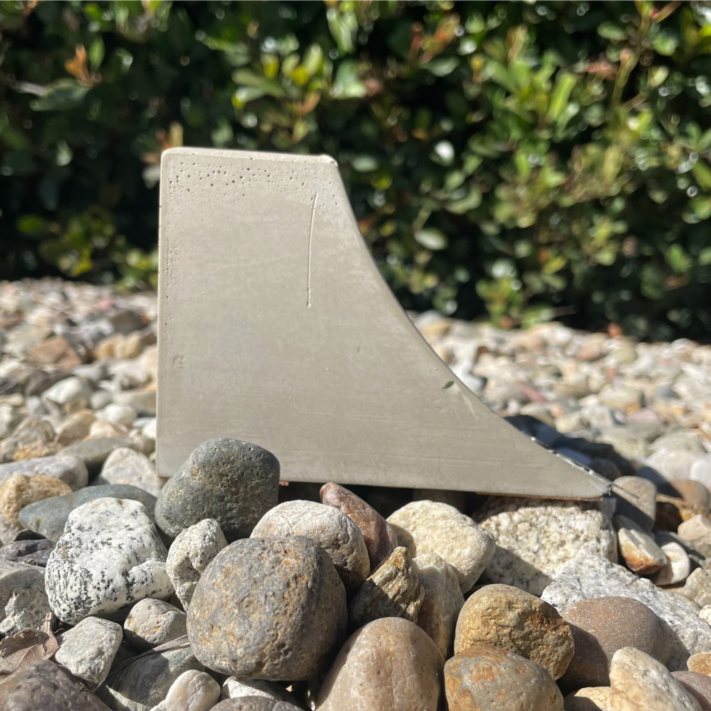

Frame test
Moulding at four aspect ratios
Verifying the border-image moulding before the gallery is built on it: corners must stay carved, edges must not smear, and every work must hang from a common line.

Landscape 3:2
Orthographic and isometric views with title block. Tests a wide frame, where edge ornament is most likely to smear.

Square 1:1
Cast concrete with embossed maker's mark. Tests equal edge lengths.

Portrait 4:5
Tests a tall frame, the reference proportion.

Wide 16:9
The most extreme ratio in use — worst case for corner distortion.